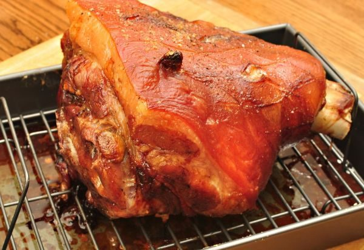
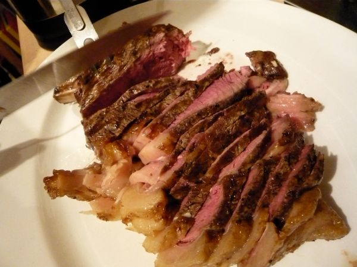

Pepper Steak
Poppa kept 2 versions of this dish.
Follow any recipe, mix and match, or use for inspiration for your own version. That's how Poppa did it.
Slow Cooked Pepper Steak

Photo: jeffreyw (CC BY 2.0)
Strips of beef round steak slow-cooked with soy sauce, onions, and ginger, then finished with tomatoes and green peppers in a thickened sauce and served over rice or noodles.
Directions
- Cut beef into 3 inch by 1 inch strips. Brown in oil in a skillet. Transfer to a slow cooker. Combine the next seven ingredients; pour over beef. Cover and cook on low for 5-6 hours or until meat is tender. Add tomatoes and green peppers; cook on low for 1 hour longer. Combine the cold water and cornstarch to make a paste; stir into liquid in slow cooker and cook on high until thickened. Serve over noodles or rice.
- Cut the beef into 3-inch by 1-inch strips. Brown them in the oil in a skillet.
- Transfer the beef to a slow cooker.
- Combine the next seven ingredients (soy sauce, chopped onions, garlic, sugar, salt, pepper, and ground ginger); pour over the beef.
- Cover and cook on low for 5-6 hours, or until the meat is tender.
- Add the tomatoes and green peppers; cook on low for 1 hour longer.
- Combine the cold water and cornstarch to make a paste; stir it into the liquid in the slow cooker and cook on high until thickened.
- Serve over noodles or rice.
Goes well with
Savory Pepper Steak

Photo: WordRidden (CC BY 2.0)
A slow-cooker pepper steak: flour-coated round steak strips braised with onion, garlic, green peppers, and tomatoes in a savory soy-and-Worcestershire sauce, served over rice.
Directions
- Cut steak into strips. Combine flour; salt and pepper; toss with steak strips to coat thoroughly. Add to stoneware with onion, garlic and half of pepper strips; stir. Combine tomatoes with beef base, soy sauce and Worcestershire sauce. Pour into stoneware, moistening meat well. Cover, cook on low 10 to 12 hours (High 5 to 6 hrs) One hour before serving, stir in remaining pepper strips. Serve over hot rice.
- Cut the round steak into strips.
- Combine the flour, salt, and pepper; toss with the steak strips to coat thoroughly.
- Add to the stoneware with the onion, garlic, and half of the green pepper strips; stir.
- Combine the tomatoes with the beef flavor granules (beef base), soy sauce, and Worcestershire sauce. Pour into the stoneware, moistening the meat well.
- Cover and cook on low 10 to 12 hours (or high 5 to 6 hours).
- One hour before serving, stir in the remaining pepper strips.
- Serve over hot rice.
Goes well with
https://baron-3dl.github.io/normans-kitchen/recipe/slow-cooked-pepper-steak.html